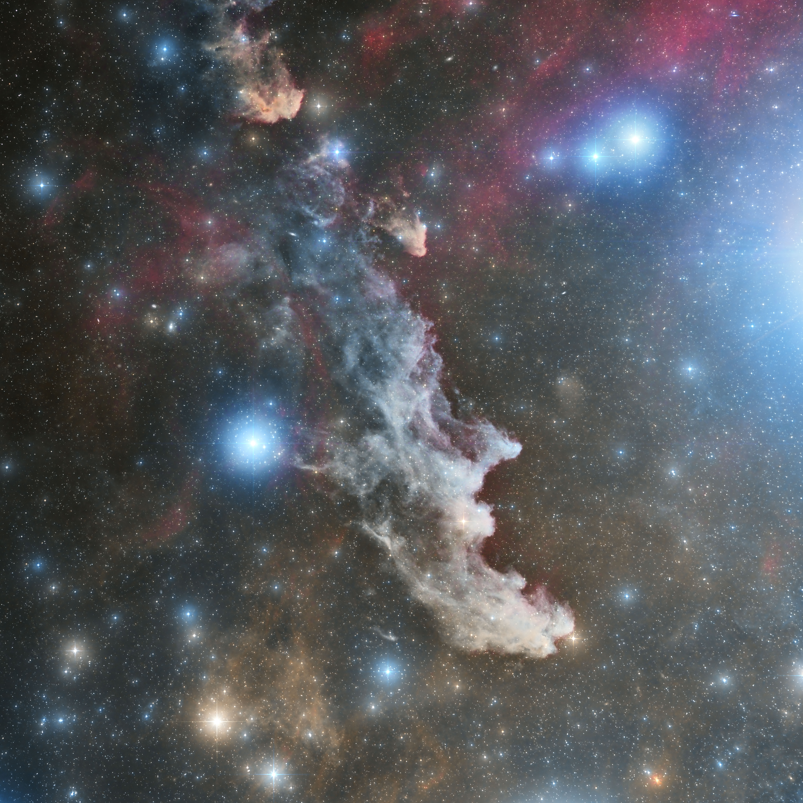

A bunch of cosmic dust
Nebulas are primarily composed of hydrogen gas, along with traces of other elements such as helium, oxygen, and carbon. They can span hundreds of light-years across and come in a variety of shapes and sizes, from delicate wisps to intricate pillars and vast expanses of glowing gas.
Within nebulas, gravity pulls together dense regions of gas and dust, triggering the formation of new stars. These stellar nurseries give birth to stars of various sizes and masses, ranging from massive, luminous giants to small, dim dwarfs. As newborn stars ignite nuclear fusion in their cores, they illuminate their surroundings, illuminating the nebula with their radiant energy.
Types of nebulas
Emission Nebulas: Glowing clouds of ionized gas, often illuminated by nearby stars. Examples include the iconic Orion Nebula and the Lagoon Nebula.
Reflection Nebulas: Dust clouds that reflect the light of nearby stars, producing a bluish hue. The Pleiades star cluster is surrounded by a prominent reflection nebula.
Dark Nebulas: Dense clouds of dust that obscure the light of background stars, creating dark patches in the night sky. The famous Horsehead Nebula is a well-known example of a dark nebula.
Planetary Nebulas: Shells of gas expelled by dying stars, revealing their inner layers as they shed their outer layers. The Cat's Eye Nebula and the Ring Nebula are striking examples of planetary nebulas.
Cosmic art
Nebulas are not only cosmic nurseries but also works of art painted by the forces of nature. Their intricate shapes and vibrant colors are sculpted by stellar winds, radiation pressure, and shockwaves from nearby supernovae. Over millions of years, these celestial masterpieces evolve and morph, creating a visual feast for astronomers and stargazers alike.
Beyond the visible spectrum
While many nebulas are visible to the naked eye or through telescopes, others emit radiation beyond the visible spectrum. Infrared and radio telescopes reveal hidden details within nebulas, unveiling the processes of star formation and the dynamics of interstellar matter.
The most stunning nebulas
The most interesting nebulas in the sky are orion nebula, witch head nebula, rosette nebula, dumbbell neubla, iris nebula, heart nebula, north america nebula, california nebula, horsehead nebula, helix nebula, ring nebula